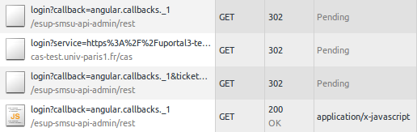

Single Page Application et web-services CASifiés
Pascal.Rigaux @ univ-paris1.fr
Solution simple
web-service dédié SPA
Une solution simple est de faire comme les applications non-SPA : exiger une session valide pour toutes pages html. Exemple :- casification de la page html
- gestion de la fin de session : propose le rechargement de la page en cas de fin de session
NB : app/index.html est accessible, mais l'appli est sensée démarrer sur la page app/index.php NB2 : if your first page is static AND CAS protected, you must ensure it is not browser cached
Limites
La solution proposée est très simple et fonctionne très bien. Pourquoi faire plus compliqué ?- mieux gérer la fin de session
- Web Services séparés de la SPA
- Web Components (ie Web Widgets)
Authentification
Pour authentifier un web service depuis le navigateur :
| possibilité | contraintes |
|---|---|
| classique | maitriser l'url de la page |
| window.open + postMessage | clic utilisateur |
| JSONP | auth préalable, third party cookies, pas shibboleth |
| iframe cachée | auth préalable, third party cookies |
window.open + postMessage
 Permet de gérer finement le relog en fin de session :
Permet de gérer finement le relog en fin de session :
- prompt the user to relog
- window.open la mire CAS
- postMessage
- l'appli ferme la fenêtre
Utilisé notamment par google
Exemple d'implémentation : AngularJS, Angular (TODO).
XHR, CORS, JSONP
| GET | POST | DELETE, PUT |
Cross domain | Cookies | Error handling | HTTP header | |
|---|---|---|---|---|---|---|---|
| XHR | X | X | X | X | X | X | |
| CORS | X | X | X | controlé | limité | X | X |
| JSONP | X | X | X | partiel | |||
| <form> + hidden iframe | oui, aveugle |
oui, aveugle |
X | X | ? |
XHR, CORS, JSONP
Précisions
CORS- bien répandu (IE >= 8)
- limité : impossible d'avoir cookies + redirect
JSONP
- possibilité de contrôler partiellement le cross-domain en vérifiant le referer
<form> + hidden iframe
- impossible de lire le résultat des requêtes GET/POST
JSONP vs Ajax
REST/JSON
Requête Ajax http://foo.fr/bar qui renvoie
{ "Name": "Foo", "Id": 1234 }
JSONP
Balise script src=http://foo.fr/bar?callback=f qui renvoie
f({ "Name": "Foo", "Id": 1234 })
echo $data
echo $_GET['callback'] . '(' . $data . ');';
JSONP
Avec un web-service compatible JSONP, on peut l'utiliser de la même manière que XHR tout en étant cross-domain.⚠ Autoriser JSONP ouvre le web-service à des vols de données par XSS.
⚠ Pour éviter les attaques CSRF, le web-service doit respecter la norme HTTP : GET ne doit pas faire d'effet de bord.
Safari refuse les cookies des sites non visités. Cela concerne uniquement les sites externes. Si besoin, le web-service peut contourner le problème en utilisant sessionStorage.
JSONP & CAS
 Si cookie CAS dans le navigateur,
Si cookie CAS dans le navigateur,
possibilité d'autolog requête JSONP :
 NB : CAS gateway est recommandée pour la gestion d'erreur
JSONP et Shibboleth
La fédération Éducation-Recherche utilise le binding « HTTP Post ». Cela rend difficile l'authentification :
- JSONP : impossible
- iframe cachée : possible mais impossible de savoir si l'authentification a échoué ou est en cours
Solution :
- tester un login automatique dans une iframe cachée
- tout en proposant un login explicite avec window.open
NB : l'utilisation du binding « HTTP Artifact » rendrait le mécanisme similaire à CAS. Cela éviterait aussi les syndromes « page blanche » et « action "page précédente" impossible »
SPA et WS sur domaine différent
Safari refuse les cookies des sites non visités. Cela concerne uniquement les sites externes.Dans ce cas on peut utiliser un token
- conservé dans sessionStorage ou en mémoire,
- passé à chaque requête XHR, par exemple dans le header "Authorization"
SPA et WS sur domaine différent
Authentification du web-service qui renvoie d'un token :- Java CAS Client : facile ➡ fait dans SMS-U (redirectAfterValidation + jsessionid dans l'URL)
- phpCAS : facile
- Shibboleth SP : impossible, cookies obligatoires
- SimpleSAMLphp, OpenSAML... : à tester
login_then
 L'api fournit une page login.php qui redirige vers la page html une fois la session obtenue.
Beaucoup d'applications utilisent cette technique (spring-security, shibboleth-SP...)
Cette technique est utilisable avec ou sans cookies (pour le web-service)
Exemple d'implémentation :
avec puis
sans cookie
L'api fournit une page login.php qui redirige vers la page html une fois la session obtenue.
Beaucoup d'applications utilisent cette technique (spring-security, shibboleth-SP...)
Cette technique est utilisable avec ou sans cookies (pour le web-service)
Exemple d'implémentation :
avec puis
sans cookie
{kind=link}
implicit grant
 Mimicks OAuth2 implicit grant which passes the token as a fragment identifier.
Note that it breaks CAS back channel Single Logout.
Exemple d'implémentation
Mimicks OAuth2 implicit grant which passes the token as a fragment identifier.
Note that it breaks CAS back channel Single Logout.
Exemple d'implémentation